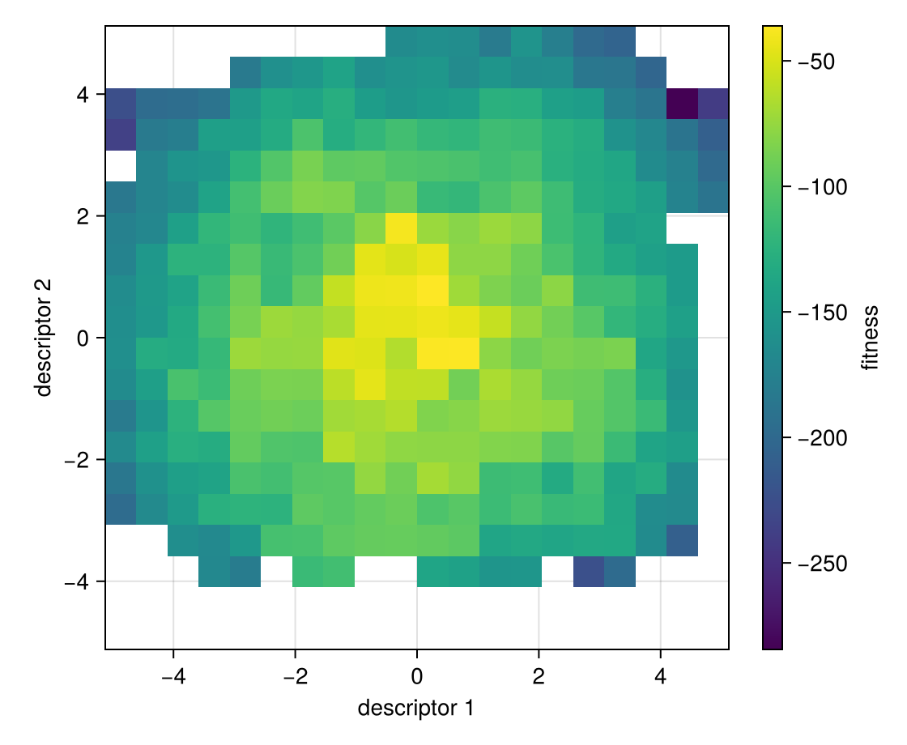

MAP-Elites on the Rastrigin function
Quality-diversity (QD) optimization does not look for one best solution. It fills a grid of cells, each covering a region of descriptor space, with the best solution found for that cell. This tutorial goes through the workflow of the package once:
- define a problem,
- choose an algorithm,
- run it with
solve, and - look at the result: metrics, elites and a heatmap.
Set up once, from the repository root:
julia --project=examples -e 'using Pkg; Pkg.develop(path="."); Pkg.instantiate()'Run:
julia --project=examples examples/rastrigin_tutorial.jlusing QualityDiversity
using Random: Xoshiro1. The problem
Rastrigin(10) is a benchmark over 10 real parameters. The fitness of a solution is the negated Rastrigin value, so higher is better, with a maximum of
- Its descriptor is two numbers: the mean of the first five parameters and the
mean of the last five, each in [-5.12, 5.12].
prob = Rastrigin(10)Rastrigin(10)For your own problem, QDProblem(f; init, bounds) wraps a function f that returns (fitness, descriptor); see the graph tutorial.
2. The algorithm
MAP-Elites keeps a grid over descriptor space, here 20 by 20 cells. Each round it draws batch_size parents from the grid, mutates them with Gaussian noise of standard deviation 0.3, and a child takes a cell if it is empty or if the child beats the solution there.
alg = MAPElites(prob; dims=(20, 20), batch_size=100, variation=GaussianMutation(0.3))3. Running it
The budget counts evaluations. A seeded random number generator makes the run reproducible.
result = solve(prob, alg; budget=100_000, rng=Xoshiro(1))QDResult after 100000 evaluations
archive: GridArchive with 317 of 400 cells occupied
qd_score: 91262.10642648741
coverage: 0.7925
max_fitness: -36.09277954655117
mean_fitness: -122.106919790260554. The result
solve returns a summary of the final archive. result.history holds the same metrics after every round, so you can follow the run, from the first round to the last:
result.history[1](n_evals = 100, qd_score = 14693.114949369326, coverage = 0.16, max_fitness = -113.84875070095471, mean_fitness = -180.42007891610427)result.history[end](n_evals = 100000, qd_score = 91262.10642648741, coverage = 0.7925, max_fitness = -36.09277954655117, mean_fitness = -122.10691979026055)result.archive is the grid. Its elites, the best solution of every filled cell, come as pairs of a solution and its evaluation:
archive = result.archive
elites = collect(QualityDiversity.elites(archive))
length(elites)317x, ev = first(elites)
(fitness=ev.fitness, descriptor=ev.descriptor)(fitness = -116.41388161481927, descriptor = [-2.182748934508153, 1.0771716735650352])The best elite of the whole archive:
best_x, best_ev = argmax(((x, ev),) -> ev.fitness, elites)
round.(best_x; digits=2)10-element Vector{Float64}:
-0.98
-0.14
1.06
-1.11
1.17
-0.03
-0.07
2.21
0.82
-0.02With a Makie backend loaded, such as CairoMakie, heatmap draws the fitness of every cell; empty cells stay blank. Plotting archives shows more.
using CairoMakie
fig, ax, hm = heatmap(archive; figure=(size=(560, 460),),
axis=(xlabel="descriptor 1", ylabel="descriptor 2", aspect=1))
Colorbar(fig[1, 2], hm; label="fitness")
fig
Things to try
- A different mutation size:
GaussianMutation(0.1)orGaussianMutation(1.0). - A crossover that moves along the line between two elites:
variation=IsoLineVariation(0.01, 0.2). - A finer grid:
dims=(40, 40). - Stepping one round at a time instead of calling
solve:state = init(prob, alg; budget=10_000, rng=Xoshiro(1)); step!(state). - Another algorithm, such as
CMAME(prob; dims=(20, 20), sigma0=0.5): the rest of the workflow stays the same.